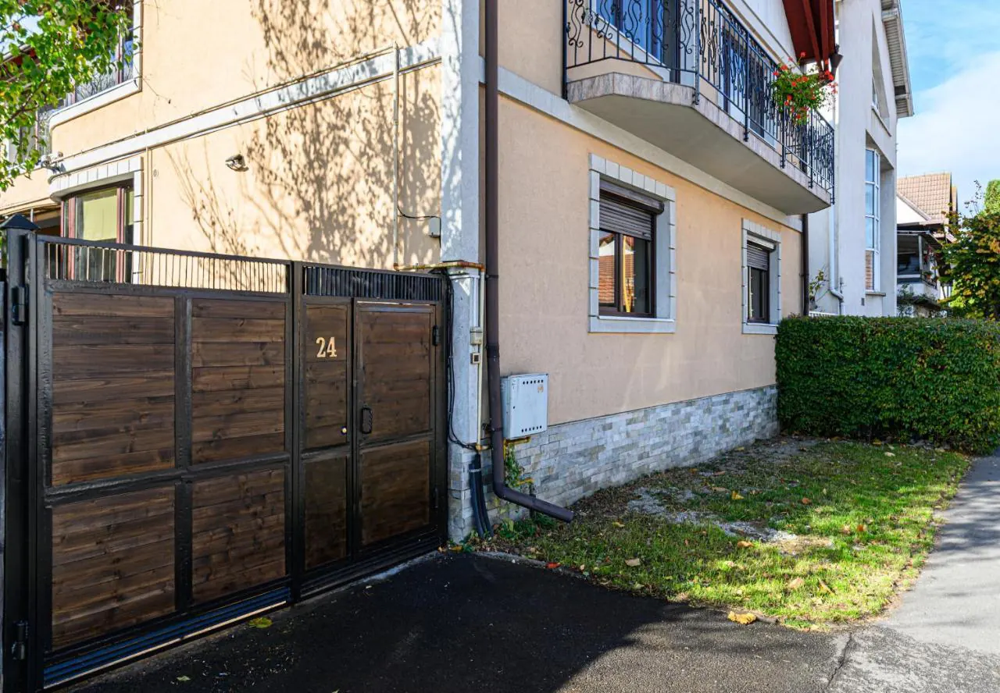

Ghid pentru aparținători și vizitatori
Cazare lângă Spitalul Județean Brașov
Actualizat la 5 noiembrie 2026
Dacă ai pe cineva internat la Spitalul Clinic Județean de Urgență Brașov, cel mai mult contează să poți ajunge repede pe jos, fără mașină și fără să cauți parcare. Vila Nomad este o pensiune de 3 stele, conform certificatului de clasificare, cu 4 camere, pe Strada Traian 24, la aproximativ 3-6 minute de mers pe jos de spital (estimare, în funcție de intrarea folosită).

Unde este spitalul și cât de departe este Vila Nomad
Spitalul Clinic Județean de Urgență Brașov se află pe Calea București 25-27. Vila Nomad este pe Strada Traian 24, în spatele spitalului, și poți ajunge pe jos.
| Destinație | Pe jos |
|---|---|
| Spitalul Clinic Județean de Urgență Brașov | 3-6 minute, în funcție de intrare |
| Stația de autobuz Traian | aproximativ 4 minute |
| Stația de autobuz Spitalul Județean | aproximativ 7 minute |
Unele secții pot funcționa în alte locații din oraș, de exemplu Mârzescu sau Tractorul. Înainte să rezervi, verifică la ce adresă este internat pacientul, pentru că distanțele de mai sus sunt doar până la campusul de pe Calea București.
Ce găsești la Vila Nomad
- 4 camere duble deluxe, fiecare cu baie privată, prosoape și uscător de păr
- Wi-Fi gratuit rapid, aer condiționat, încălzire și izolare fonică
- Birou în cameră, util dacă trebuie să lucrezi în zilele de spitalizare
- Living comun, terasă și curte
- Parcare stradală: un loc gratuit, restul locurilor plătite
Cât costă o noapte
Camera dublă deluxe costă de la 250 RON pe noapte, iar camera dublă deluxe cu balcon de la 275 RON pe noapte. Prețul este pe cameră, nu pe persoană. La tarif se adaugă taxa de oraș de 12 RON pe zi, achitată la cazare. Tariful final se confirmă pe WhatsApp, în funcție de perioadă.
Sosire, plecare și plată
Check-in-ul este între 15:00 și 22:00, iar check-out-ul între 08:00 și 11:00. Poți sosi și după ora 22:00 dacă anunți ora, iar telefonul este disponibil non-stop. Poți plăti numerar, cu cardul, prin transfer bancar sau cu carduri de vacanță. Camerele sunt pentru nefumători, iar animalele de companie nu sunt acceptate.
Întrebări frecvente
Unde pot sta lângă Spitalul Județean din Brașov?
Vila Nomad, pe Strada Traian 24, este o pensiune la 3-6 minute pe jos de Spitalul Clinic Județean de Urgență Brașov.
Pot rezerva pentru o singură noapte?
Da. Nu există sejur minim. Disponibilitatea se confirmă direct pe WhatsApp, la +40 722 292 023.
Pot ajunge după ora 22:00?
Da. Anunță ora sosirii și te așteptăm. Ne poți suna non-stop la +40 722 292 023.
Vila Nomad are legătură cu spitalul?
Nu. Vila Nomad este o pensiune independentă, fără nicio afiliere cu spitalul.